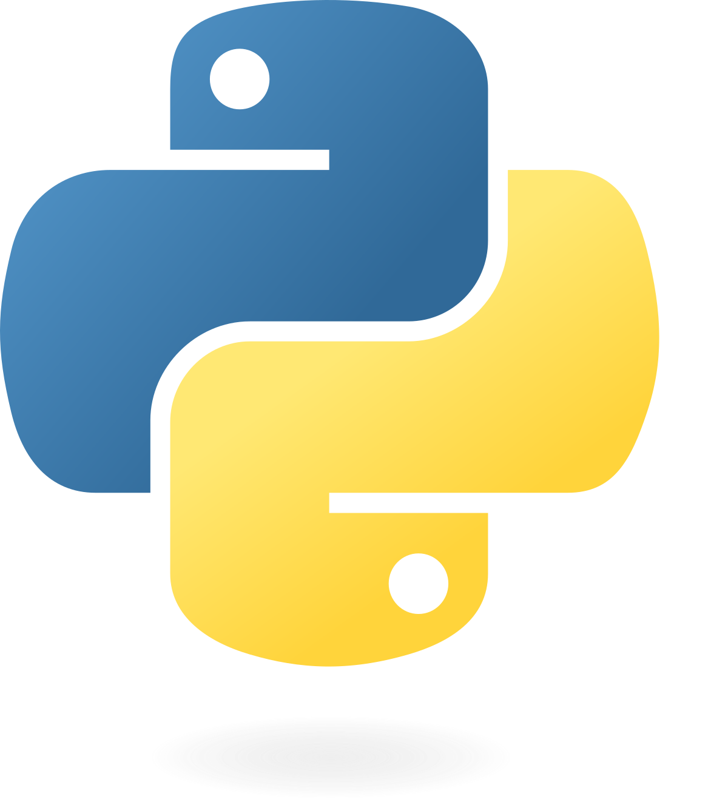
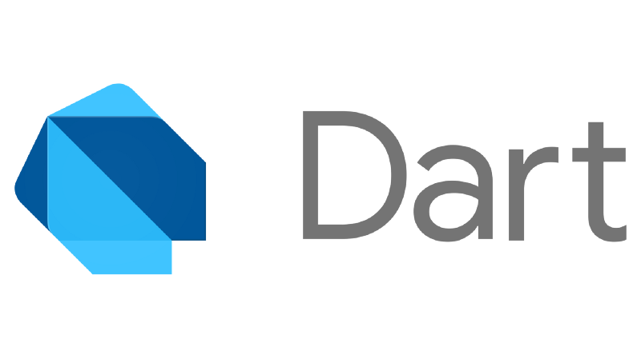

Sobre mi
Hola, soy Samuel Quintero Sánchez. Soy un desarrollador web apasionado que disfruta crear sitios web limpios, intuitivos y responsivos. Siempre estoy explorando nuevas tecnologías para mantenerme actualizado y mejorar continuamente mi trabajo. Me encanta convertir ideas en realidad a través del código y el diseño. Cuando no estoy programando, suelo aprender algo nuevo o trabajar en proyectos personales.
Habilidades
Estos son alguno de los lenguajes que he usado:
-
Python
 -
Java

-
Dart
 -
Html